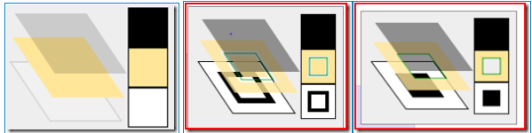

Cairo是一个支持多种输出设备的２Ｄ图形库。当前支持的输出目标（output target）包括：X Window System，Quartz，Win32，image buffers，PostScript，PDF，还有 SVG。
下面研究一下Cairo的绘图模型，首先是该模型中最重要的三个概念：这三个概念对应于下图中的三层从上到下分别为：source，mask，destination。简单的思想就是Source会通过Mask的过滤从而画在我们的输出设备（destination）上。
source是用来绘图的绘图板，或者笔，墨水，绘图的时候可以用来画线，填充。Source可以有以下四种：Colors，Gradients，Patterns和Images。

最下面的destination，是一种surface，是要输出的设备，可以是窗口，或者一个PDF,SVG等等。因此我们要做的是使用“动词”构造一个合适的Mask。
Mask被用作一个过滤器。Mask用来决定Source的哪些部分可以应用到destination上，哪些不可以用到destination上。
所有的这三层会对应于一个Context。Context里面包含所有图形的状态数据（比如：线的宽度，颜色，surface to draw，还有其它，这就允许绘图函数使用少量的参数来绘图）。Mask层上不透明的部分可以应用到destination上，透明的地方刚不会。
这些“动词”包括：Stroke和Fill。Stroke允许path附近的source通过mask。而fill允许path内部的元素通过mask。（The stroke operation draws the outlines of shapes and the fill operation fills the insides of shapes.）另外的动词还包括Paint，Mask和ShowText等。